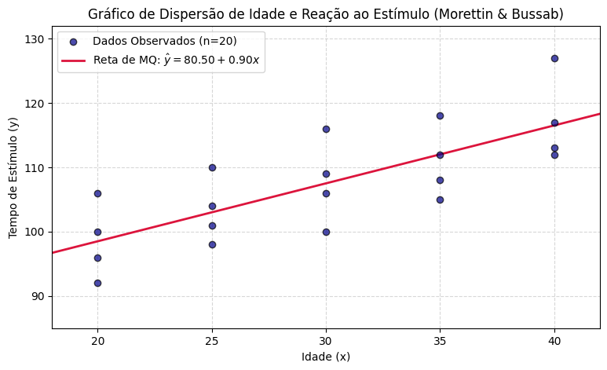

Visualizar código
import numpy as np
import matplotlib.pyplot as plt
# 1. CRIANDO OS DADOS DA TABELA 16.1 (Morettin & Bussab)
# 5 subgrupos de idade (X) com 4 indivíduos em cada grupo (total n = 20)
x = np.array([20, 20, 20, 20,
25, 25, 25, 25,
30, 30, 30, 30,
35, 35, 35, 35,
40, 40, 40, 40])
# Tempos de reação observados correspondentes (Y)
y = np.array([96, 92, 106, 100,
98, 104, 110, 101,
116, 106, 109, 100,
112, 105, 118, 108,
113, 112, 127, 117])
n = len(x)
# 2. CALCULANDO AS ESTATÍSTICAS SUMÁRIAS
soma_x = np.sum(x)
soma_y = np.sum(y)
soma_x2 = np.sum(x**2)
soma_xy = np.sum(x * y)
media_x = np.mean(x)
media_y = np.mean(y)
# 3. APLICANDO AS FÓRMULAS DE MÍNIMOS QUADRADOS
# Coeficiente Angular (Beta chapéu)
numerador_beta = soma_xy - n * media_x * media_y
denominador_beta = soma_x2 - n * (media_x**2)
beta_chapeu = numerador_beta / denominador_beta
# Intercepto (Alpha chapéu)
alpha_chapeu = media_y - beta_chapeu * media_x
print("-" * 50)
print(" ESTIMADORES DE MÍNIMOS QUADRADOS (ANALÍTICO)")
print("-" * 50)
print(f"Soma de X: {soma_x} | Soma de Y: {soma_y}")
print(f"Média de X (x_barra): {media_x:.2f} | Média de Y (y_barra): {media_y:.2f}")
print(f"Coeficiente Angular (β^): {beta_chapeu:.4f} (Oficial do livro: 0.90)")
print(f"Intercepto (α^): {alpha_chapeu:.4f} (Oficial do livro: 80.50)")
print("-" * 50)
print(f"Equação Ajustada: Ŷ_i = {alpha_chapeu:.2f} + {beta_chapeu:.2f} * X_i\n")
# 4. GERANDO O GRÁFICO DE DISPERSÃO COM A RETA AJUSTADA (Figura 16.1)
plt.figure(figsize=(9, 5))
plt.scatter(x, y, color='darkblue', alpha=0.7, edgecolors='black', zorder=3, label='Dados Observados (n=20)')
# Gerando pontos sobre a reta para o traçado gráfico
x_reta = np.linspace(18, 42, 100)
y_predito = alpha_chapeu + beta_chapeu * x_reta
plt.plot(x_reta, y_predito, color='crimson', linestyle='-', linewidth=2, label=rf'Reta de MQ: $\hat{{y}} = {alpha_chapeu:.2f} + {beta_chapeu:.2f}x$')
plt.title('Gráfico de Dispersão de Idade e Reação ao Estímulo (Morettin & Bussab)')
plt.xlabel('Idade (x)')
plt.ylabel('Tempo de Estímulo (y)')
plt.xlim(18, 42)
plt.ylim(85, 132)
plt.grid(True, linestyle='--', alpha=0.5)
plt.legend(loc='upper left')
plt.show()--------------------------------------------------
ESTIMADORES DE MÍNIMOS QUADRADOS (ANALÍTICO)
--------------------------------------------------
Soma de X: 600 | Soma de Y: 2150
Média de X (x_barra): 30.00 | Média de Y (y_barra): 107.50
Coeficiente Angular (β^): 0.9000 (Oficial do livro: 0.90)
Intercepto (α^): 80.5000 (Oficial do livro: 80.50)
--------------------------------------------------
Equação Ajustada: Ŷ_i = 80.50 + 0.90 * X_i
